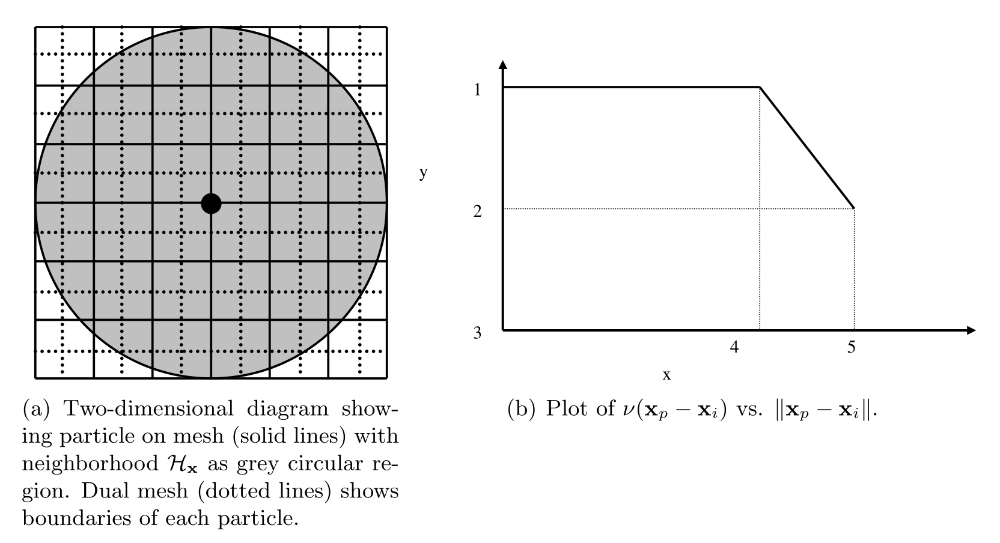
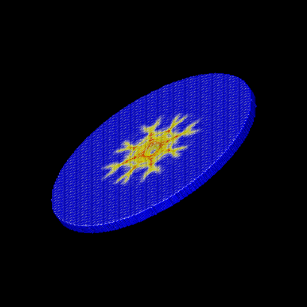
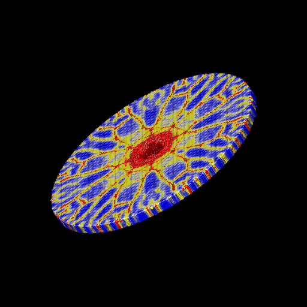
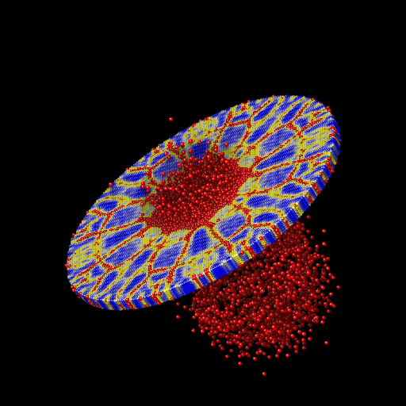
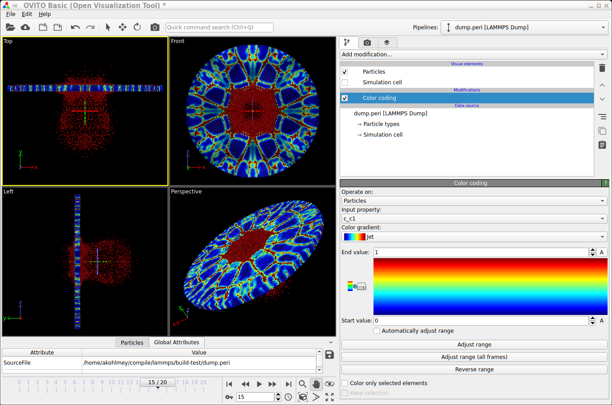
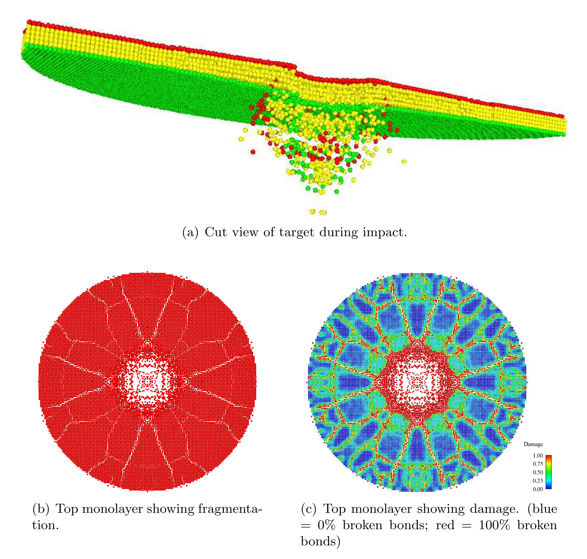

\(\renewcommand{\AA}{\text{Å}}\)
10.5.10. Peridynamics with LAMMPS
This Howto is based on the Sandia report 2010-5549 by Michael L. Parks, Pablo Seleson, Steven J. Plimpton, Richard B. Lehoucq, and Stewart A. Silling.
Overview
Peridynamics is a nonlocal extension of classical continuum mechanics. The discrete peridynamic model has the same computational structure as a molecular dynamics model. This Howto provides a brief overview of the peridynamic model of a continuum, then discusses how the peridynamic model is discretized within LAMMPS as described in the original article (Parks). An example problem with comments is also included.
Quick Start
The peridynamics styles are included in the optional PERI package. If your LAMMPS executable does not already include the PERI package, you can see the build instructions for packages for how to enable the package when compiling a custom version of LAMMPS from source.
Here is a minimal example for setting up a peridynamics simulation.
units si
boundary s s s
lattice sc 0.0005
atom_style peri
atom_modify map array
neighbor 0.0010 bin
region target cylinder y 0.0 0.0 0.0050 -0.0050 0.0 units box
create_box 1 target
create_atoms 1 region target
pair_style peri/pmb
pair_coeff * * 1.6863e22 0.0015001 0.0005 0.25
set group all density 2200
set group all volume 1.25e-10
velocity all set 0.0 0.0 0.0 sum no units box
fix 1 all nve
compute 1 all damage/atom
timestep 1.0e-7
Some notes on this input example:
peridynamics simulations typically use SI units
particles must be created on a simple cubic lattice
using the atom style peri is required
an atom map is required for indexing particles
The skin distance used when computing neighbor lists should be defined appropriately for your choice of simulation parameters. The skin should be set to a value such that the peridynamic horizon plus the skin distance is larger than the maximum possible distance between two bonded particles (before their bond breaks). Here it is set to 0.001 meters.
a peridynamics pair style is required. Available choices are currently: peri/eps, peri/lps, peri/pmb, and peri/ves. The model parameters are set with a pair_coeff command.
the mass density and volume fraction for each particle must be defined. This is done with the two set commands for density and volume. For a simple cubic lattice, the volume of a particle should be equal to the cube of the lattice constant, here \(V_i = \Delta x ^3\).
with the velocity command all particles are initially at rest
a plain velocity-Verlet time integrator is used, which is algebraically equivalent to a centered difference in time, but numerically more stable
you can compute the damage at the location of each particle with compute damage/atom
finally, the timestep is set to 0.1 microseconds with the timestep command.
Peridynamic Model of a Continuum
The following is not a complete overview of peridynamics, but a discussion of only those details specific to the model we have implemented within LAMMPS. For more on the peridynamic theory, the reader is referred to (Silling 2007). To begin, we define the notation we will use.
Basic Notation
Within the peridynamic literature, the following notational conventions are generally used. The position of a given point in the reference configuration is \(\textbf{x}\). Let \(\mathbf{u}(\mathbf{x},t)\) and \(\mathbf{y}(\mathbf{x},t)\) denote the displacement and position, respectively, of the point \(\mathbf{x}\) at time \(t\). Define the relative position and displacement vectors of two bonded points \(\textbf{x}\) and \(\textbf{x}^\prime\) as \(\mathbf{\xi} = \textbf{x}^\prime - \textbf{x}\) and \(\mathbf{\eta} = \textbf{u}(\textbf{x}^\prime,t) - \textbf{u}(\textbf{x},t)\), respectively. We note here that \(\mathbf{\eta}\) is time-dependent, and that \(\mathbf{\xi}\) is not. It follows that the relative position of the two bonded points in the current configuration can be written as \(\boldsymbol{\xi} + \boldsymbol{\eta} = \mathbf{y}(\mathbf{x}^{\prime},t)-\mathbf{y}(\mathbf{x},t)\).
Peridynamic models are frequently written using states, which we briefly describe here. For the purposes of our discussion, all states are operators that act on vectors in \(\mathbb{R}^3\). For a more complete discussion of states, see (Silling 2007). A vector state is an operator whose image is a vector, and may be viewed as a generalization of a second-rank tensor. Similarly, a scalar state is an operator whose image is a scalar. Of particular interest is the vector force state \(\underline{\mathbf{T}}\left[ \mathbf{x},t \right]\left< \mathbf{x}^{\prime}-\mathbf{x} \right>\), which is a mapping, having units of force per volume squared, of the vector \(\mathbf{x}^{\prime}-\mathbf{x}\) to the force vector state field. The vector state operator \(\underline{\mathbf{T}}\) may itself be a function of \(\mathbf{x}\) and \(t\). The constitutive model is completely contained within \(\underline{\mathbf{T}}\).
In the peridynamic theory, the deformation at a point depends collectively on all points interacting with that point. Using the notation of (Silling 2007), we write the peridynamic equation of motion as
where \(\rho\) represents the mass density, \(\underline{\mathbf{T}}\) the force vector state, and \(\mathbf{b}\) an external body force density. A point \(\mathbf{x}\) interacts with all the points \(\mathbf{x}^{\prime}\) within the neighborhood \(\mathcal{H}_{\mathbf{x}}\), assumed to be a spherical region of radius \(\delta>0\) centered at \(\mathbf{x}\). \(\delta\) is called the horizon, and is analogous to the cutoff radius used in molecular dynamics. Conditions on \(\underline{\mathbf{T}}\) for which (1) satisfies the balance of linear and angular momentum are given in (Silling 2007).
We consider only force vector states that can be written as
with \(\underline{t}\) a scalar force state and \(\underline{\mathbf{M}}\) the deformed direction vector state, defined by
Such force states correspond to so-called ordinary materials (Silling 2007). These are the materials for which the force between any two interacting points \(\textbf{x}\) and \(\textbf{x}^\prime\) acts along the line between the points.
Linear Peridynamic Solid (LPS) Model
We summarize the linear peridynamic solid (LPS) material model. For more on this model, the reader is referred to (Silling 2007). This model is a nonlocal analogue to a classical linear elastic isotropic material. The elastic properties of a classical linear elastic isotropic material are determined by (for example) the bulk and shear moduli. For the LPS model, the elastic properties are analogously determined by the bulk and shear moduli, along with the horizon \(\delta\).
The LPS model has a force scalar state
with \(K\) the bulk modulus and \(\alpha\) related to the shear modulus \(G\) as
The remaining components of the model are described as follows. Define the reference position scalar state \(\underline{x}\) so that \(\underline{x}\left<\boldsymbol{\xi} \right> = \left\Vert \boldsymbol{\xi} \right\Vert\). Then, the weighted volume \(m\) is defined as
Let
be the extension scalar state, and
be the dilatation. The isotropic and deviatoric parts of the extension scalar state are defined, respectively, as
where the arguments of the state functions and the vectors on which they operate are omitted for simplicity. We note that the LPS model is linear in the dilatation \(\theta\), and in the deviatoric part of the extension \(\underline{e}^\mathrm{d}\).
Note
The weighted volume \(m\) is time-independent, and does not change as bonds break. It is computed with respect to the bond family defined at the reference (initial) configuration.
The non-negative scalar state \(\underline{\omega}\) is an influence function (Silling 2007). For more on influence functions, see (Seleson 2010). If an influence function \(\underline{\omega}\) depends only upon the scalar \(\left\Vert \boldsymbol{\xi} \right\Vert\), (i.e., \(\underline{\omega}\left<\boldsymbol{\xi}\right> = \underline{\omega}\left<\left\Vert \boldsymbol{\xi} \right\Vert\right>\)), then \(\underline{\omega}\) is a spherical influence function. For a spherical influence function, the LPS model is isotropic (Silling 2007).
Note
In the LAMMPS implementation of the LPS model, the influence function
\(\underline{\omega}\left<\left\Vert \boldsymbol{\xi}
\right\Vert\right> = 1 / \left\Vert \boldsymbol{\xi} \right\Vert\) is
used. However, the user can define their own influence function by
altering the method “influence_function” in the file
pair_peri_lps.cpp. The LAMMPS peridynamics code permits both
spherical and non-spherical influence functions (e.g., isotropic and
non-isotropic materials).
Prototype Microelastic Brittle (PMB) Model
We summarize the prototype microelastic brittle (PMB) material model. For more on this model, the reader is referred to (Silling 2000) and (Silling 2005). This model is a special case of the LPS model; see (Seleson 2010) for the derivation. The elastic properties of the PMB model are determined by the bulk modulus \(K\) and the horizon \(\delta\).
The PMB model is expressed using the scalar force state field
with \(f\) a scalar-valued function. We assume that \(f\) takes the form
where
with \(K\) the bulk modulus and \(\delta\) the horizon, and \(s\) the bond stretch, defined as
Bond stretch is a unitless quantity, and identical to a one-dimensional definition of strain. As such, we see that a bond at its equilibrium length has stretch \(s=0\), and a bond at twice its equilibrium length has stretch \(s=1\). The constant \(c\) given above is appropriate for 3D models only. For more on the origins of the constant \(c\), see (Silling 2005). For the derivation of \(c\) for 1D and 2D models, see (Emmrich).
with
Unlike the LPS model, the PMB model has a Poisson ratio of \(\nu=1/4\) in 3D, and \(\nu=1/3\) in 2D. This is reflected in the input for the PMB model, which requires only the bulk modulus of the material, whereas the LPS model requires both the bulk and shear moduli.
Damage
Bonds are made to break when they are stretched beyond a given limit. Once a bond fails, it is failed forever (Silling). Further, new bonds are never created during the course of a simulation. We discuss only one criterion for bond breaking, called the critical stretch criterion.
Define \(\mu\) to be the history-dependent scalar boolean function
where \(\mathbf{\eta}^\prime = \textbf{u}(\textbf{x}^{\prime \prime},t) - \textbf{u}(\textbf{x}^\prime,t)\) and \(\mathbf{\xi}^\prime = \textbf{x}^{\prime \prime} - \textbf{x}^\prime\). Here, \(s_0(t,\mathbf{\eta},\mathbf{\xi})\) is a critical stretch defined as
where \(s_{00}\) and \(\alpha\) are material-dependent constants. The history function \(\mu\) breaks bonds when the stretch \(s\) exceeds the critical stretch \(s_0\).
Although \(s_0(t,\mathbf{\eta},\mathbf{\xi})\) is expressed as a property of a particle, bond breaking must be a symmetric operation for all particle pairs sharing a bond. That is, particles \(\textbf{x}\) and \(\textbf{x}^\prime\) must utilize the same test when deciding to break their common bond. This can be done by any method that treats the particles symmetrically. In the definition of \(\mu\) above, we have chosen to take the minimum of the two \(s_0\) values for particles \(\textbf{x}\) and \(\textbf{x}^\prime\) when determining if the \(\textbf{x}\)–\(\textbf{x}^\prime\) bond should be broken.
Following (Silling), we can define the damage at a point \(\textbf{x}\) as
Discrete Peridynamic Model and LAMMPS Implementation
In LAMMPS, instead of (1), we model this equation of motion:
where we explicitly track and store at each timestep the positions and not the displacements of the particles. We observe that \(\ddot{\textbf{y}}(\textbf{x}, t) = \ddot{\textbf{x}} + \ddot{\textbf{u}}(\textbf{x}, t) = \ddot{\textbf{u}}(\textbf{x}, t)\), so that this is equivalent to (1).
Spatial Discretization
The region defining a peridynamic material is discretized into particles forming a simple cubic lattice with lattice constant \(\Delta x\), where each particle \(i\) is associated with some volume fraction \(V_i\). For any particle \(i\), let \(\mathcal{F}_i\) denote the family of particles for which particle \(i\) shares a bond in the reference configuration. That is,
The discretized equation of motion replaces (1) with
where \(n\) is the timestep number and subscripts denote the particle number.
Short-Range Forces
In the model discussed so far, particles interact only through their bond forces. A particle with no bonds becomes a free non-interacting particle. To account for contact forces, short-range forces are introduced (Silling 2007). We add to the force in (12) the following force
where \(d_{pi}\) is the short-range interaction distance between particles \(p\) and \(i\), and \(c_S\) is a multiple of the constant \(c\) from (6). Note that the short-range force is always repulsive, never attractive. In practice, we choose
For the short-range interaction distance, we choose (Silling 2007)
where \(r_i\) is called the node radius of particle \(i\). Given a discrete lattice, we choose \(r_i\) to be half the lattice constant.
Note
For a simple cubic lattice, \(\Delta x = \Delta y = \Delta z\).
Given this definition of \(d_{pi}\), contact forces appear only when particles are under compression.
When accounting for short-range forces, it is convenient to define the short-range family of particles
Modification to the Particle Volume
The right-hand side of (12) may be thought of as a midpoint quadrature of (1). To slightly improve the accuracy of this quadrature, we discuss a modification to the particle volume used in (12). In a situation where two particles share a bond with \(\left\Vert { \textbf{x}_p - \textbf{x}_i }\right\Vert = \delta\), for example, we suppose that only approximately half the volume of each particle is “seen” by the other (Silling 2007). When computing the force of each particle on the other we use \(V_p / 2\) rather than \(V_p\) in (12). As such, we introduce a nodal volume scaling function for all bonded particles where \(\delta - r_i \leq \left\Vert { \textbf{x}_p - \textbf{x}_i } \right\Vert \leq \delta\) (see the Figure below).
We choose to use a linear unitless nodal volume scaling function
If \(\left\Vert {\textbf{x}_p - \textbf{x}_i} \right\Vert = \delta\), \(\nu = 0.5\), and if \(\left\Vert {\textbf{x}_p - \textbf{x}_i} \right\Vert = \delta - r_i\), \(\nu = 1.0\), for example.

Diagram showing horizon of a particular particle, demonstrating that the volume associated with particles near the boundary of the horizon is not completely contained within the horizon.
Temporal Discretization
When discretizing time in LAMMPS, we use a velocity-Verlet scheme, where both the position and velocity of the particle are stored explicitly. The velocity-Verlet scheme is generally expressed in three steps. In Algorithm 1, \(\rho_i\) denotes the mass density of a particle and \(\widetilde{\textbf{f}}_i^n\) denotes the net force density on particle \(i\) at timestep \(n\). The LAMMPS command fix nve performs a velocity-Verlet integration.
Algorithm 1: Velocity Verlet
1: \(\textbf{v}_i^{n + 1/2} = \textbf{v}_i^n + \frac{\Delta t}{2 \rho_i} \widetilde{\textbf{f}}_i^n\)2: \(\textbf{y}_i^{n+1} = \textbf{y}_i^n + \Delta t \textbf{v}_i^{n + 1/2}\)3: \(\textbf{v}_i^{n+1} = \textbf{v}_i^{n+1/2} + \frac{\Delta t}{2 \rho_i} \widetilde{\textbf{f}}_i^{n+1}\)
Breaking Bonds
During the course of simulation, it may be necessary to break bonds, as described in the Damage section. Bonds are recorded as broken in a simulation by removing them from the bond family \(\mathcal{F}_i\) (see (11)).
A naive implementation would have us first loop over all bonds and compute \(s_{min}\) in (9), then loop over all bonds again and break bonds with a stretch \(s > s_0\) as in (8), and finally loop over all particles and compute forces for the next step of Algorithm 1. For reasons of computational efficiency, we instead store the per-particle minimum stretch \(s_{min}\) from the previous timestep and, when deciding whether to break a bond, form its critical stretch \(s_0 = s_{00} - \alpha\, s_{min}\) from that bond’s own \(s_{00}\) and \(\alpha\). This keeps the criterion correct when \(s_{00}\) and \(\alpha\) differ between atom-type pairs (for example, a deliberately weakened interface).
Changed in version 4Jul2026.
Earlier versions stored a single per-particle critical stretch \(s_0\) (the maximum of \(s_{00} - \alpha s\) over a particle’s bonds), which reproduces (9) only when \(s_{00}\) and \(\alpha\) are identical for all atom-type pairs.
Note
For the first timestep, \(s_0\) is initialized to \(\mathbf{\infty}\) for all nodes. This means that no bonds may be broken until the second timestep. As such, it is recommended that the first few timesteps of the peridynamic simulation not involve any actions that might result in the breaking of bonds. As a practical example, the projectile in the commented example below is placed such that it does not impact the target brittle plate until several timesteps into the simulation.
LPS Pseudocode
A sketch of the LPS model implementation in the PERI package appears in Algorithm 2. This algorithm makes use of the routines in Algorithm 3 and Algorithm 4.
Algorithm 2: LPS Peridynamic Model Pseudocode
Fix \(s_{00}\), \(\alpha\), horizon \(\delta\), bulk modulus \(K\), shear modulus \(G\), timestep \(\Delta t\), and generate initial lattice of particles with lattice constant \(\Delta x\). Let there be \(N\) particles. Define constant \(c_S\) for repulsive short-range forces.Initialize bonds between all particles \(i \neq j\) where \(\left\Vert {\textbf{x}_j - \textbf{x}_i} \right\Vert \leq \delta\)Initialize weighted volume \(m\) for all particles using Algorithm 3Initialize \(s_0 = \mathbf{\infty}\) {Initialize each entry to MAX_DOUBLE}while not done doPerform step 1 of Algorithm 1, updating velocities of all particlesPerform step 2 of Algorithm 1, updating positions of all particles\(\tilde{s}_0 = \mathbf{\infty}\) {Initialize each entry to MAX_DOUBLE}for \(i=1\) to \(N\) do{Compute short-range forces}for all particles \(j \in \mathcal{F}^S_i\) (the short-range family of nodes for particle \(i\)) do\(r = \left\Vert {\textbf{y}_j - \textbf{y}_i} \right\Vert\)\(dr = \min \{ 0, r - d \}\) {Short-range forces are only repulsive, never attractive}\(k = \frac{c_S}{\delta} V_k dr\) {\(c_S\) defined in :ref:`(14) <pericS>`}\(\textbf{f} = \textbf{f} + k \frac{\textbf{y}_j-\textbf{y}_i}{\left\Vert {\textbf{y}_j-\textbf{y}_i} \right\Vert}\)end forend forCompute the dilatation for each particle using Algorithm 4for \(i=1\) to \(N\) do{Compute bond forces}for all particles \(j\) sharing an unbroken bond with particle \(i\) do\(e = \left\Vert {\textbf{y}_j - \textbf{y}_i} \right\Vert - \left\Vert {\textbf{x}_j - \textbf{x}_i} \right\Vert\)\(\omega_+ = \underline{\omega}\left<\textbf{x}_j - \textbf{x}_i\right>\) {Influence function evaluation}\(\omega_- = \underline{\omega}\left<\textbf{x}_i - \textbf{x}_j\right>\) {Influence function evaluation}\(\hat{f} = \left[ (3K-5G)\left( \frac{\theta(i)}{m(i)}\omega_+ + \frac{\theta(j)}{m(j)}\omega_- \right) \left\Vert {\textbf{x}_j - \textbf{x}_i} \right\Vert + 15G \left( \frac{\omega_+}{m(i)} + \frac{\omega_-}{m(j)} \right) e \right] \nu(\textbf{x}_j - \textbf{x}_i) V_j\)\(\textbf{f} = \textbf{f} + \hat{f} \frac{\textbf{y}_j-\textbf{y}_i}{\left\Vert {\textbf{y}_j-\textbf{y}_i} \right\Vert}\)if \((dr / \left\Vert {\textbf{x}_j - \textbf{x}_i} \right\Vert) > \min(s_0(i), s_0(j))\) thenBreak \(i\)’s bond with \(j\) {\(j\) ‘s bond with \(i\) will be broken when this loop iterates on \(j\)}end if\(\tilde{s}_0(i) = \min (\tilde{s}_0(i),s_{00}-\alpha(dr / \left\Vert {\textbf{x}_j - \textbf{x}_i} \right\Vert))\)end forend for\(s_0 = \tilde{s}_0\) {Store for use in next timestep}Perform step 3 of Algorithm 1, updating velocities of all particlesend whileAlgorithm 3: Computation of Weighted Volume m
for \(i=1\) to \(N\) do\(m(i) = 0.0\)for all particles \(j\) sharing a bond with particle \(i\) do\(m(i) = m(i) + \underline{\omega}\left<\textbf{x}_j - \textbf{x}_i\right> \left\Vert {\textbf{x}_j - \textbf{x}_i} \right\Vert^2 \nu(\textbf{x}_j - \textbf{x}_i) V_j\)end forend forAlgorithm 4: Computation of Dilatation \(\theta\)
for \(i=1\) to \(N\) do\(\theta(i) = 0.0\)for all particles \(j\) sharing an unbroken bond with particle \(i\) do\(e = \left\Vert {\textbf{y}_i - \textbf{y}_j} \right\Vert - \left\Vert {\textbf{x}_i - \textbf{x}_j} \right\Vert\)\(\theta(i) = \theta(i) + \underline{\omega}\left<\textbf{x}_j - \textbf{x}_i\right> \left\Vert {\textbf{x}_j - \textbf{x}_i} \right\Vert e \nu(\textbf{x}_j - \textbf{x}_i) V_j\)end for\(\theta(i) = \frac{3}{m(i)}\theta(i)\)end for
PMB Pseudocode
A sketch of the PMB model implementation in the PERI package appears in Algorithm 5.
Algorithm 5: PMB Peridynamic Model Pseudocode
Fix \(s_{00}\), \(\alpha\), horizon \(\delta\), spring constant \(c\), timestep \(\Delta t\), and generate initial lattice of particles with lattice constant \(\Delta x\). Let there be \(N\) particles.Initialize bonds between all particles \(i \neq j\) where \(\left\Vert {\textbf{x}_j - \textbf{x}_i} \right\Vert \leq \delta\)Initialize \(s_0 = \mathbf{\infty}\) {Initialize each entry to MAX_DOUBLE}while not done doPerform step 1 of Algorithm 1, updating velocities of all particlesPerform step 2 of Algorithm 1, updating positions of all particles\(\tilde{s}_0 = \mathbf{\infty}\) {Initialize each entry to MAX_DOUBLE}for \(i=1\) to \(N\) do{Compute short-range forces}for all particles \(j \in \mathcal{F}^S_i\) (the short-range family of nodes for particle \(i\)) do\(r = \left\Vert {\textbf{y}_j - \textbf{y}_i} \right\Vert\)\(dr = \min \{ 0, r - d \}\) {Short-range forces are only repulsive, never attractive}\(k = \frac{c_S}{\delta} V_k dr\) {\(c_S\) defined in :ref:`(14) <pericS>`}\(\textbf{f} = \textbf{f} + k \frac{\textbf{y}_j-\textbf{y}_i}{\left\Vert {\textbf{y}_j-\textbf{y}_i} \right\Vert}\)end forend forfor \(i=1\) to \(N\) do{Compute bond forces}for all particles \(j\) sharing an unbroken bond with particle \(i\) do\(r = \left\Vert {\textbf{y}_j - \textbf{y}_i} \right\Vert\)\(dr = r - \left\Vert {\textbf{x}_j - \textbf{x}_i} \right\Vert\)\(k = \frac{c}{\left\Vert {\textbf{x}_i - \textbf{x}_j} \right\Vert} \nu(\textbf{x}_i - \textbf{x}_j) V_j dr\) {\(c\) defined in :ref:`(6) <peric>`}\(\textbf{f} = \textbf{f} + k \frac{\textbf{y}_j-\textbf{y}_i}{\left\Vert {\textbf{y}_j-\textbf{y}_i} \right\Vert}\)if \((dr / \left\Vert {\textbf{x}_j - \textbf{x}_i} \right\Vert) > \min(s_0(i), s_0(j))\) thenBreak \(i\)’s bond with \(j\) {\(j\)‘s bond with \(i\) will be broken when this loop iterates on \(j\)}end if\(\tilde{s}_0(i) = \min (\tilde{s}_0(i),s_{00}-\alpha(dr / \left\Vert {\textbf{x}_j - \textbf{x}_i} \right\Vert))\)end forend for\(s_0 = \tilde{s}_0\) {Store for use in next timestep}Perform step 3 of Algorithm 1, updating velocities of all particlesend while
Damage
The damage associated with every particle (see (10)) can optionally be computed and output with a LAMMPS data dump. To do this, your input script must contain the command compute damage/atom This enables a LAMMPS per-atom compute to calculate the damage associated with each particle every time a LAMMPS data dump frame is written.
Visualizing Simulation Results
There are multiple ways to visualize the simulation results. Typically, you want to display the particles and color code them by the value computed with the compute damage/atom command.
This can be done, for example, by using the built-in visualizer of the dump image or dump movie command to create snapshot images or a movie. Below are example command for using dump image with the example listed below and a set of images created for steps 300, 600, and 2000 this way.
dump D2 all image 100 dump.peri.*.png c_C1 type box no 0.0 view 30 60 zoom 1.5 up 0 0 -1 ssao yes 4539 0.6
dump_modify D2 pad 5 adiam * 0.001 amap 0.0 1.0 ca 0.1 3 min blue 0.5 yellow max red
  
{kind=link}
{kind=link}
{kind=link}
For interactive visualization, the Ovito is very
convenient to use. Below are steps to create a visualization of the
same example from below now using the generated
trajectory in the dump.peri file.
Launch Ovito
File -> Load File ->
dump.periSelect “-> Particle types” and under “Appearance” set “Display radius:” to 0.0005
From the “Add modification:” drop down list select “Color coding”
Under “Color coding” select from the “Color gradient” drop down list “Jet”
Also under “Color coding” set “Start value:” to 0 and “End value:” to 1
You can improve the image quality by adding the “Ambient occlusion” modification

Screenshot of visualizing a trajectory with Ovito
Pitfalls
Parallel Scalability
LAMMPS operates in parallel in a spatial-decomposition mode, where each processor owns a spatial subdomain of the overall simulation domain and communicates with its neighboring processors via distributed-memory message passing (MPI) to acquire ghost atom information to allow forces on the atoms it owns to be computed. LAMMPS also uses Verlet neighbor lists which are recomputed every few timesteps as particles move. On these timesteps, particles also migrate to new processors as needed. LAMMPS decomposes the overall simulation domain so that spatial subdomains of nearly equal volume are assigned to each processor. When each subdomain contains nearly the same number of particles, this results in a reasonable load balance among all processors. As is more typical with some peridynamic simulations, some subdomains may contain many particles while other subdomains contain few particles, resulting in a load imbalance that impacts parallel scalability.
Setting the “skin” distance
The neighbor command with LAMMPS is used to set the so-called “skin” distance used when building neighbor lists. All atom pairs within a cutoff distance equal to the horizon \(\delta\) plus the skin distance are stored in the list. Unexpected crashes in LAMMPS may be due to too small a skin distance. The skin should be set to a value such that \(\delta\) plus the skin distance is larger than the maximum possible distance between two bonded particles. For example, if \(s_{00}\) is increased, the skin distance may also need to be increased.
“Lost” particles
All particles are contained within the “simulation box” of LAMMPS. The boundaries of this box may change with time, or not, depending on how the LAMMPS boundary command has been set. If a particle drifts outside the simulation box during the course of a simulation, it is called lost.
As an option of the thermo_modify command of LAMMPS, the lost keyword determines whether LAMMPS checks for lost atoms each time it computes thermodynamics and what it does if atoms are lost. If the value is ignore, LAMMPS does not check for lost atoms. If the value is error or warn, LAMMPS checks and either issues an error or warning. The code will exit with an error and continue with a warning. This can be a useful debugging option. The default behavior of LAMMPS is to exit with an error if a particle is lost.
The peridynamic module within LAMMPS does not check for lost atoms. If a particle with unbroken bonds is lost, those bonds are marked as broken by the remaining particles.
Defining the peridynamic horizon \(\mathbf{\delta}\)
In the pair_coeff command, the user must specify the horizon \(\delta\). This argument determines which particles are bonded when the simulation is initialized. It is recommended that \(\delta\) be set to a small fraction of a lattice constant larger than desired.
For example, if the lattice constant is 0.0005 and you wish to set the horizon to three times the lattice constant, then set \(\delta\) to be 0.0015001, a value slightly larger than three times the lattice constant. This guarantees that particles three lattice constants away from each other are still bonded. If \(\delta\) is set to 0.0015, for example, floating point error may result in some pairs of particles three lattice constants apart not being bonded.
Breaking bonds too early
For technical reasons, the bonds in the simulation are not created until the end of the first timestep of the simulation. Therefore, one should not attempt to break bonds until at least the second step of the simulation.
Bugs
The user is cautioned that this code is a beta release. If you are confident that you have found a bug in the peridynamic module, please report it in a GitHub Issue <https://github.com/lammps/lammps/issues> or send an email to the LAMMPS developers. First, check the New features and bug fixes section of the LAMMPS website site to see if the bug has already been reported or fixed. If not, the most useful thing you can do for us is to isolate the problem. Run it on the smallest number of atoms and fewest number of processors and with the simplest input script that reproduces the bug. In your message, describe the problem and any ideas you have as to what is causing it or where in the code the problem might be. We’ll request your input script and data files if necessary.
Modifying and Extending the Peridynamic Module
To add new features or peridynamic potentials to the peridynamic module, the user is referred to the Modifying & extending LAMMPS section. To develop a new bond-based material, start with the peri/pmb pair style as a template. To develop a new state-based material, start with the peri/lps pair style as a template.
A Numerical Example
To introduce the peridynamic implementation within LAMMPS, we replicate a numerical experiment taken from section 6 of (Silling 2005).
Problem Description and Setup
We consider the impact of a rigid sphere on a homogeneous disk of brittle material. The sphere has diameter \(0.01\) m and velocity 100 m/s directed normal to the surface of the target. The target material has density \(\rho = 2200\) kg/m:math:^3. A PMB material model is used with \(K = 14.9\) GPa and critical bond stretch parameters given by \(s_{00} = 0.0005\) and \(\alpha = 0.25\). A three-dimensional simple cubic lattice is constructed with lattice constant \(0.0005\) m and horizon \(0.0015\) m. (The horizon is three times the lattice constant.) The target is a cylinder of diameter \(0.074\) m and thickness \(0.0025\) m, and the associated lattice contains 103,110 particles. Each particle \(i\) has volume fraction \(V_i = 1.25 \times 10^{-10} \textrm{m}^3\).
The spring constant in the PMB material model is (see (6))
The CFL analysis from (Silling2005) shows that a timestep of \(1.0 \times 10^{-7}\) is safe.
We observe here that in IEEE double-precision floating point arithmetic when computing the bond stretch \(s(t,\mathbf{\eta},\mathbf{\xi})\) at each iteration where \(\left\Vert {\mathbf{\eta}+\mathbf{\xi}} \right\Vert\) is computed during the iteration and \(\left\Vert {\mathbf{\xi}} \right\Vert\) was computed and stored for the initial lattice, it may be that \(fl(s) = \varepsilon\) with \(\left| \varepsilon \right| \leq \varepsilon_{machine}\) for an unstretched bond. Taking \(\varepsilon = 2.220446049250313 \times 10^{-16}\), we see that the value \(c s V_i \approx 4.68 \times 10^{-4}\), computed when determining \(f\), is perhaps larger than we would like, especially when the true force should be zero. One simple way to avoid this issue is to insert the following instructions in Algorithm Algorithm 5 after instruction 21 (and similarly for Algorithm Algorithm 2):
if \(\left| dr \right| < \varepsilon_{machine}\) then\(dr = 0\)end if
Qualitatively, this says that displacements from equilibrium on the order of \(10^{-16}\)m are taken to be exactly zero, a seemingly reasonable assumption.
The Projectile
The projectile used in the following experiments is not the one used in (Silling 2005). The projectile used here exerts a force
on each atom where \(k_s\) is a specified force constant, \(r\) is the distance from the atom to the center of the indenter, and \(R\) is the radius of the projectile. The force is repulsive and \(F(r) = 0\) for \(r > R\). For our problem, the projectile radius \(R = 0.05\) m, and we have chosen \(k_s = 1.0 \times 10^{17}\) (compare with (6) above).
Writing the LAMMPS Input File
We discuss the example input script listed below.
In line 2 we specify that SI units are to be used. We specify the
dimension (3) and boundary conditions (“shrink-wrapped”) for the
computational domain in lines 3 and 4. In line 5 we specify that
peridynamic particles are to be used for this simulation. In line 7, we
set the “skin” distance used in building the LAMMPS neighbor list. In
line 8 we set the lattice constant (in meters) and in line 10 we define
the spatial region where the target will be placed. In line 12 we
specify a rectangular box enclosing the target region that defines the
simulation domain. Line 14 fills the target region with atoms. Lines 15
and 17 define the peridynamic material model, and lines 19 and 21 set
the particle density and particle volume, respectively. The particle
volume should be set to the cube of the lattice constant for a simple
cubic lattice. Line 23 sets the initial velocity of all particles to
zero. Line 25 instructs LAMMPS to integrate time with velocity-Verlet,
and lines 27-30 create the spherical projectile, sending it with a
velocity of 100 m/s towards the target. Line 32 declares a compute style
for the damage (percentage of broken bonds) associated with each
particle. Line 33 sets the timestep, line 34 instructs LAMMPS to
provide a screen dump of thermodynamic quantities every 200 timesteps,
and line 35 instructs LAMMPS to create a data file (dump.peri) with
a complete snapshot of the system every 100 timesteps. This file can be
used to create still images or movies. Finally, line 36 instructs LAMMPS
to run for 2000 timesteps.
1# 3D Peridynamic simulation with projectile"
2units si
3dimension 3
4boundary s s s
5atom_style peri
6atom_modify map array
7neighbor 0.0010 bin
8lattice sc 0.0005
9# Create desired target
10region target cylinder y 0.0 0.0 0.037 -0.0025 0.0 units box
11# Make 1 atom type
12create_box 1 target
13# Create the atoms in the simulation region
14create_atoms 1 region target
15pair_style peri/pmb
16# <type1> <type2> <c> <horizon> <s00> <alpha>
17pair_coeff * * 1.6863e22 0.0015001 0.0005 0.25
18# Set mass density
19set group all density 2200
20# volume = lattice constant^3
21set group all volume 1.25e-10
22# Zero out velocities of particles
23velocity all set 0.0 0.0 0.0 sum no units box
24# Use velocity-Verlet time integrator
25fix F1 all nve
26# Construct spherical indenter to shatter target
27variable y0 equal 0.00510
28variable vy equal -100
29variable y equal "v_y0 + step*dt*v_vy"
30fix F2 all indent 1e17 sphere 0.0000 v_y 0.0000 0.0050 units box
31# Compute damage for each particle
32compute C1 all damage/atom
33timestep 1.0e-7
34thermo 200
35dump D1 all custom 100 dump.peri id type x y z c_C1
36run 2000
Note
To use the LPS model, replace line 15 with pair_style peri/lps and modify line 16 accordingly.
Numerical Results and Discussion
We ran the input script from above. Images of the disk (projectile not shown) appear in Figure below. The plot of damage on the top monolayer was created by coloring each particle according to its damage.
The symmetry in the computed solution arises because a “perfect” lattice was used, and a because a perfectly spherical projectile impacted the lattice at its geometric center. To break the symmetry in the solution, the nodes in the peridynamic body may be perturbed slightly from the lattice sites. To do this, the lattice of points can be slightly perturbed using the displace_atoms command.

Target during (a) and after (b,c) impact
(Emmrich) Emmrich, Weckner, Commun. Math. Sci., 5, 851-864 (2007),
(Parks) Parks, Lehoucq, Plimpton, Silling, Comp Phys Comm, 179(11), 777-783 (2008).
(Silling 2000) Silling, J Mech Phys Solids, 48, 175-209 (2000).
(Silling 2005) Silling Askari, Computer and Structures, 83, 1526-1535 (2005).
(Silling 2007) Silling, Epton, Weckner, Xu, Askari, J Elasticity, 88, 151-184 (2007).
(Seleson 2010) Seleson, Parks, Int J Mult Comp Eng 9(6), pp. 689-706, 2011.